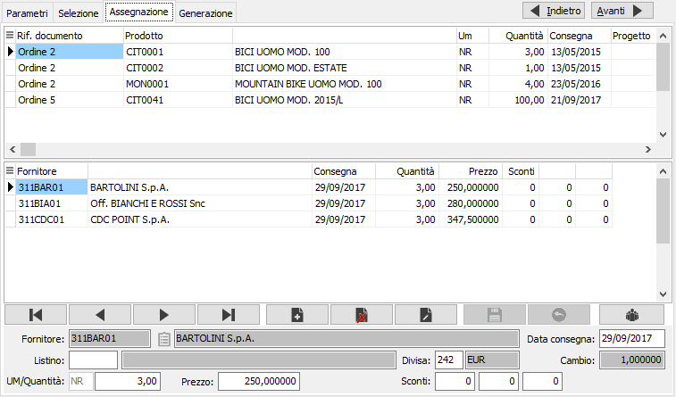
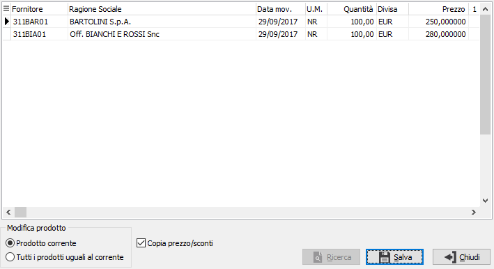
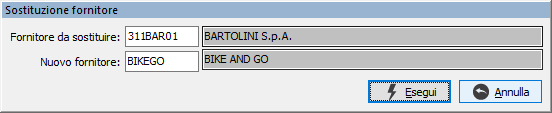

Assegnazione condizioni
Questa sezione è di fondamentale importanza per la creazione delle richieste
di offerta, in quanto consente di specificare i fornitori e le condizioni
da riportare sulla richiesta stessa; la gestione dei dati è completamente
interattiva e comprende anche alcune funzionalità automatiche.
La sezione appare divisa in tre parti: la griglia superiore che riporta
i prodotti relativi ad ordini clienti, richieste di acquisto o riferimenti
manuali risultanti dalle selezione precedenti; per ognuno nella griglia
sottostante vengono generate tante righe quanti sono i fornitori associati
in relazione al tipo di generazione scelta, con i fornitori abituali,
gli ultimi movimentati o manuale, in quest'ultimo caso sarà selezionato
un solo fornitore; il navigatore ed il pannello di input consentono la
modifica e l'inserimento di nuovi fornitori a fronte di ogni rigo documento
presente nella griglia in alto. Se presenti richieste di offerta già generate
saranno riportate nella griglia centrale, visualizzate in grigio, non
manutenibili al solo scopo informativo.
Per ogni fornitore vengono determinati dalle anagrafiche il listino
e la divisa, la quantità viene riportata dal documento di origine così
com'è oppure rapportata al lotto di riordino in base alla selezione parametri,
il prezzo e gli sconti vengono inseriti in relazione alla configurazione
prezzi/sconti del ciclo passivo e la data di consegna calcolata in base
alla consegna del documento di origine tenendo conto dei giorni di riordino.

Tutti i dati ad eccezione del codice del fornitore sono modificabili,
è possibile cancellare un fornitore oppure inserirne di nuovi. Se attiva
la gestione del dettaglio quantità è presente il bottone dettaglio, a
destra del campo, quantità tramite il quale sarà visualizzata la relativa
finestra di dettaglio
quantità; l'attivazione della finestra avviene comunque in automatico
al momento dell'accesso al campo quantità.
Non è possibile inserire lo stesso fornitore più volte a fronte di un
rigo documento.
Quando si inserisce un nuovo fornitore è possibile farlo manualmente
o con l'ausilio del pulsante Analisi
ultimi acquisti  che può
essere utilizzato per modificare il prezzo di uno o più prodotti ed anche
per assegnare i prodotti ad altri fornitori, in relazione agli ultimi
acquisti fatti; premendo il pulsante compare la finestra seguente, dalla
quale è possibile selezionare uno dei prezzi presenti da associare alla
riga che si sta inserendo oppure a tutti i prodotti uguali a quello attivo;
togliendo la spunta da Copia prezzi/sconti sarà possibile spostare il
prodotto da un fornitore ad un altro, mantenendo le condizioni economiche
esistenti. La pressione sul pulsante Salva effettuerà l'operazione. Il
pulsante Ricerca, consente di specificare direttamente un fornitore, se
dalla ricerca degli ultimi acquisti, non sarà trovato nessun dato.
che può
essere utilizzato per modificare il prezzo di uno o più prodotti ed anche
per assegnare i prodotti ad altri fornitori, in relazione agli ultimi
acquisti fatti; premendo il pulsante compare la finestra seguente, dalla
quale è possibile selezionare uno dei prezzi presenti da associare alla
riga che si sta inserendo oppure a tutti i prodotti uguali a quello attivo;
togliendo la spunta da Copia prezzi/sconti sarà possibile spostare il
prodotto da un fornitore ad un altro, mantenendo le condizioni economiche
esistenti. La pressione sul pulsante Salva effettuerà l'operazione. Il
pulsante Ricerca, consente di specificare direttamente un fornitore, se
dalla ricerca degli ultimi acquisti, non sarà trovato nessun dato.

Tramite il pulsante Sostituzione è possibile
effettuare la sostituzione di un fornitore; si apre la finestra mostrata
sotto nella quale inserire il codice del vecchio e del nuovo fornitore;
la pressione del pulsante Esegui darà il via all'elaborazione che sostituirà
tutte le occorrenze del vecchio fornitore con il nuovo, modificando di
fatto anche le relative condizioni riguardanti quantità, prezzi, sconti
e consegne..

Al termine delle modifiche, tramite il bottone Avanti, oppure utilizzando
il tasto funzione F10, si passa alla successiva fase di generazione; saranno
elaborati i prodotti per cui sono presenti dei fornitori con quantità
diversa da zero; è consentita la generazione delle richieste senza prezzo.